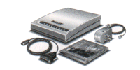

Network Connection accessories
This page lists the various Network Connection accessories that were available.
22ER9080
22ER9985
22ER9080
Tele-CD-i Assistant
External modem for all CD-i players, developed by Philips and CD-Matics. Features a 2400 bps data and 9600 bps fax function. Only for professional applications, like the Bose In-store CD-i title.

22ER9985
CD-i Internet Kit
This kit consists of an external 14.400 bps data/fax modem and access software for CD-i. Sold in Europe as
CD-Online
and in the US as
Web-i
. It allowed CD-i owners to browse the Web, write and receive e-mail messages and view Usenet newsgroups.
Back to previous page
|
Main screen
|
E-mail & Contact
© Copyright 2005 CDinteractive.co.uk and ICDIA

 22ER9080
22ER9080